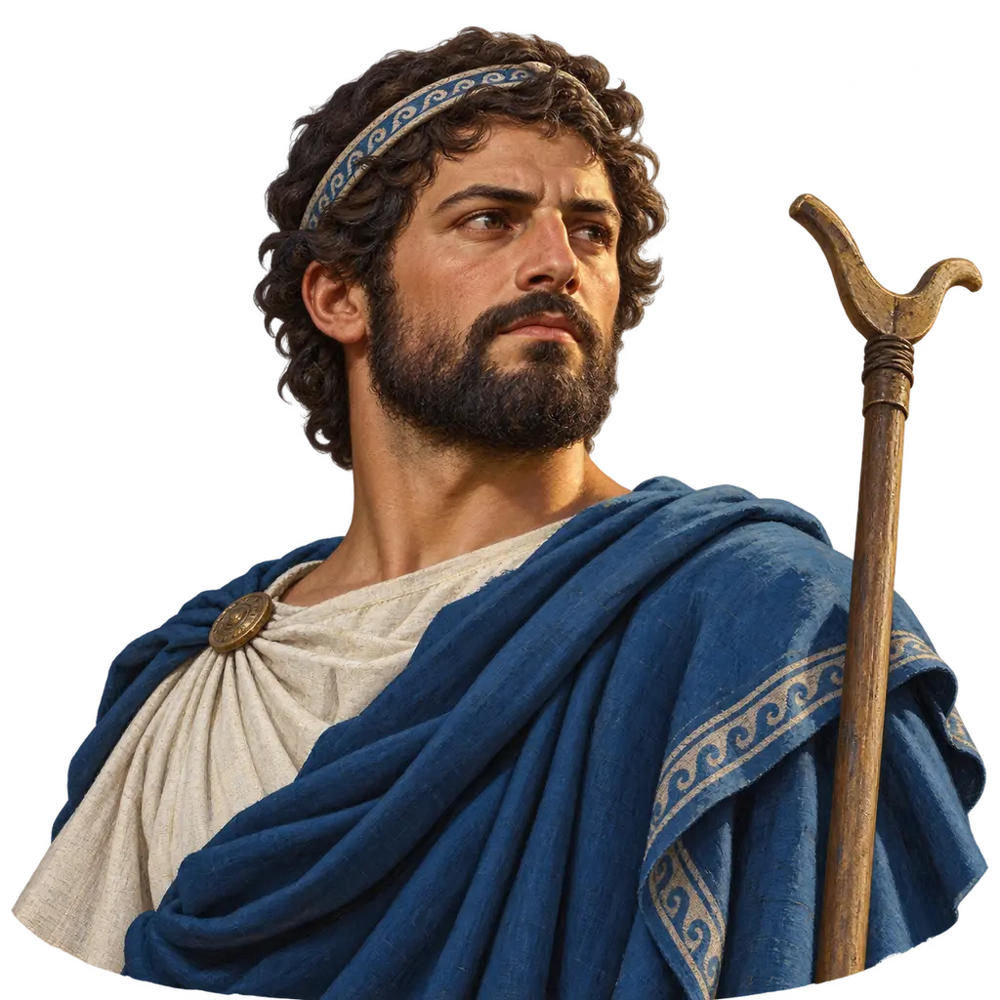
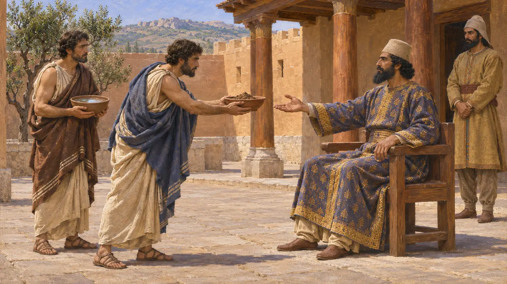
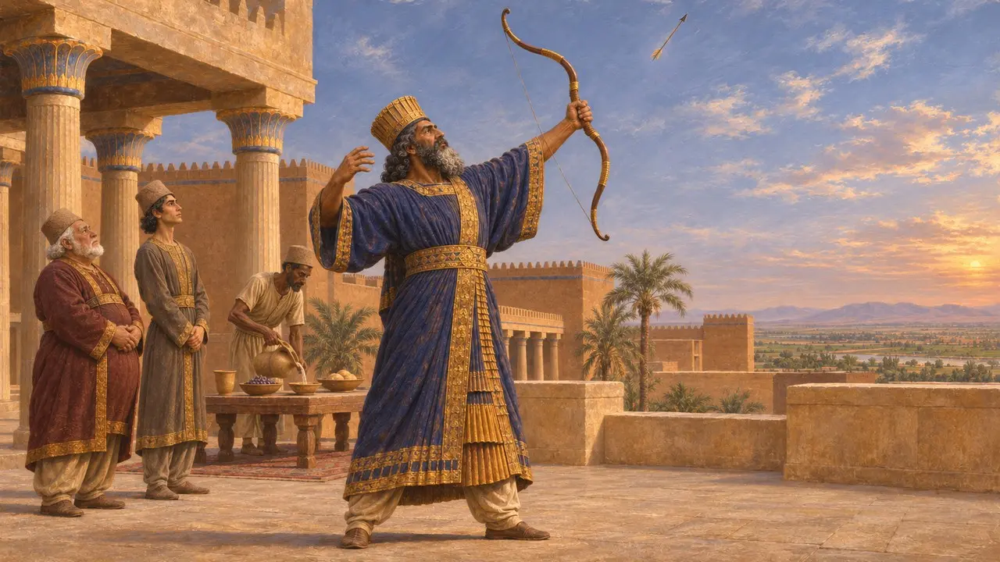
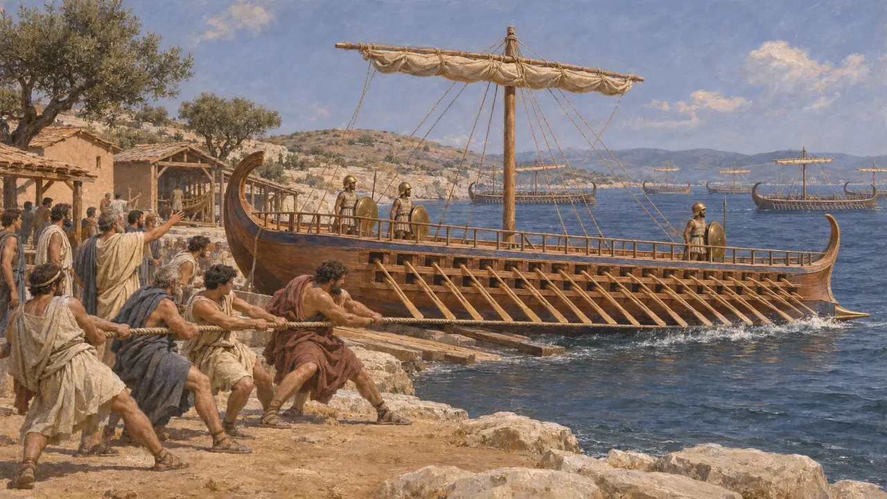
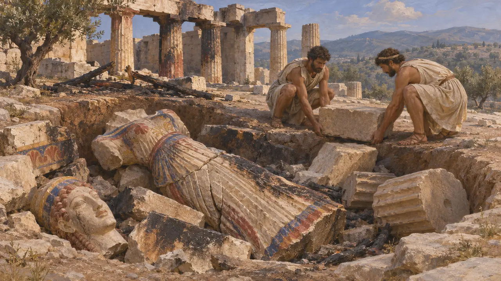
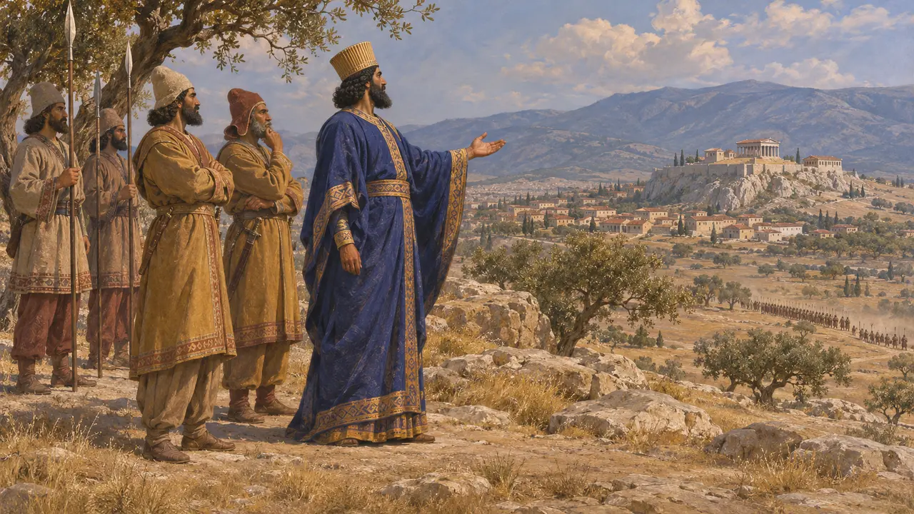
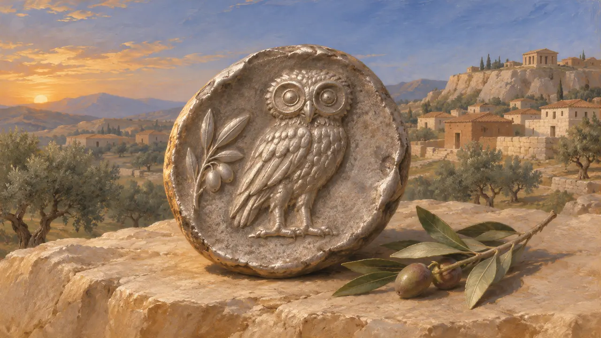

The Athenians
Citizens of Athens in Attica, Persia's opponents in the west, about 507-479 BCE
In the game: Level 7: Sardis Burns, Level 8: The Bay of Marathon, Level 10: The Hot Gates, Level 11: The Finale
The Athenians were the citizens of Athens in Attica, a city that took a new popular constitution under Cleisthenes about 508. They helped burn Sardis in 498, defeated a Persian landing at Marathon in 490, and built the fleet that fought at Salamis in 480. Most of what is known of Persia's western wars comes from Greek writers, above all Herodotus, who wrote with open sympathy for Athens.
In the game: The game makes Athens a trade partner, which simplifies a city at war with the King after 498. It also puts Athenian archers at Marathon, but Herodotus says the Greeks there had neither archers nor cavalry (6.112).

Earth and water, then war
Ancient accountHerodotus says Athenian envoys at Sardis, seeking help against Sparta about 507, gave the satrap Artaphernes earth and water, the tokens of submission, and were blamed for it at home (5.73). Artaphernes later told Athens to take back its exiled tyrant Hippias (5.96). In 498 Athens sent twenty ships to the Ionian revolt. The force helped burn Sardis, then went home after a defeat near Ephesus.
Herodotus 5.73, 5.96-103

Remember the Athenians
Later legendHerodotus tells that Darius, hearing of the burning of Sardis, asked who the Athenians were, shot an arrow into the sky and prayed for the chance to punish them. He then ordered a servant to remind him three times at every dinner not to forget the Athenians. The story is shaped as a Greek tale about royal anger, and no Persian source mentions it.
Herodotus 5.105

From Marathon to Salamis
Ancient accountHerodotus says the Athenians and the Plataeans beat the army of Datis and the younger Artaphernes at Marathon in 490, guided by the general Miltiades and the polemarch Callimachus. Later writers put the Plataeans at about a thousand. Herodotus gives 6,400 Persian and 192 Athenian dead. He adds that Themistocles persuaded Athens to spend Laurion silver on two hundred ships for a war with Aegina, and these became the core of the Greek fleet at Salamis.
Herodotus 6.108-117; Herodotus 7.144

Debris of the Persian sack
In the recordHerodotus says the Persians took the Acropolis in 480 and occupied Athens again in 479 (8.53, 9.13). Excavations on the Acropolis between 1885 and 1890 found burned statues and building blocks that the Athenians buried when they cleared the hill after the war, and many are now in the Acropolis Museum. At Marathon the burial mound known as the Soros, usually identified as the grave of the Athenian dead, was dug in 1890 and held ash, bones and pottery of about 490.
P. Kavvadias and G. Kawerau, Die Ausgrabung der Akropolis, 1906; V. Staïs, excavation report on the Soros at Marathon, 1890s; Herodotus 8.53, 9.13

A great war or a frontier problem
DisputedPersian inscriptions name the Yauna, the Ionians or Greeks in general, but never Athens, and no Persian text records Marathon or Salamis. Some historians think the King treated these campaigns as frontier affairs at the edge of a vast empire. Others follow Herodotus, whose Xerxes names revenge on Athens as a war aim. Only Aeschylus' Persians of 472 is close in time, and Herodotus wrote about two generations later for Greek readers.
P. Briant, From Cyrus to Alexander, 2002; Herodotus 7.8; Aeschylus, Persians

The emblem beside its name
In the recordThe Athenians and Plataeans carry the owl and olive sprig of Athens's silver coins, the 'owls' struck from the late 6th century. Greek armies fought under the devices on their shields, not under flags, so this is an emblem after Athens's coin.
Head, Historia Numorum, Attica
Sources
- Herodotus, Histories, books 5-9
- Aeschylus, Persians
- P. Briant, From Cyrus to Alexander, 2002
- P. Krentz, The Battle of Marathon, 2010
- J. Hurwit, The Athenian Acropolis, 1999
- P. Kavvadias and G. Kawerau, Die Ausgrabung der Akropolis, 1906